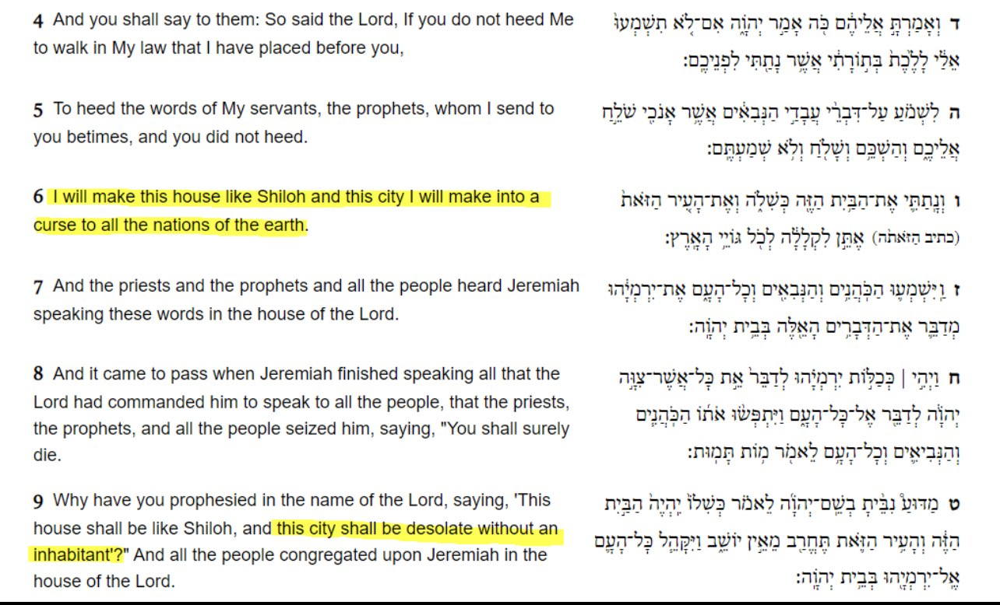
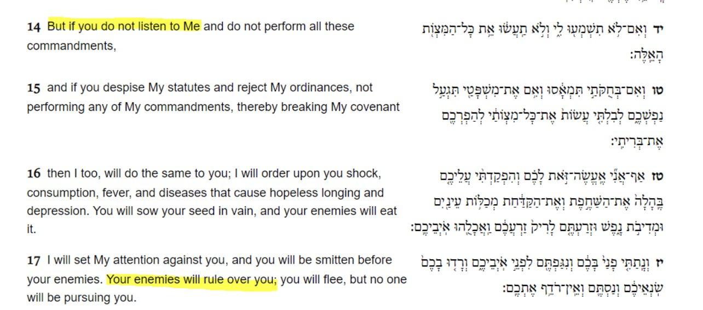
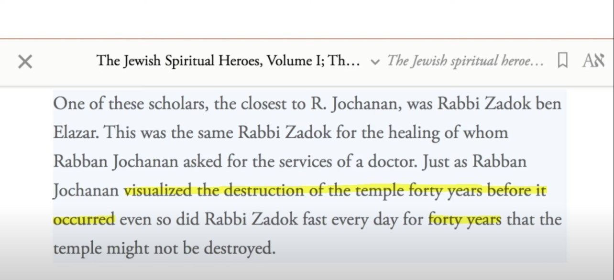
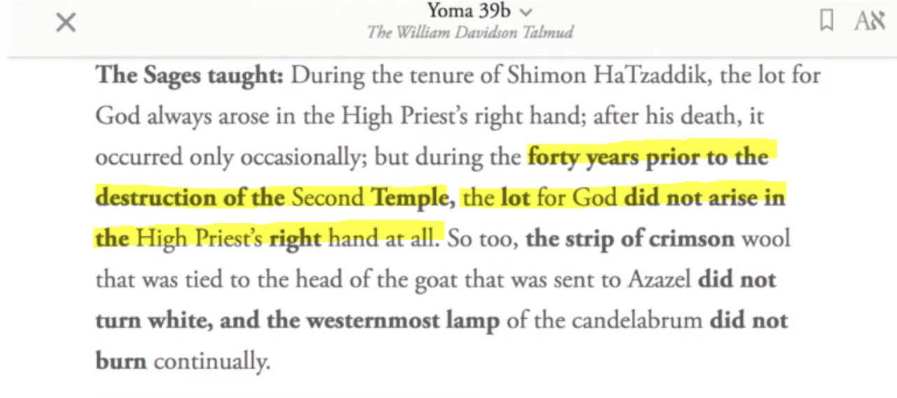
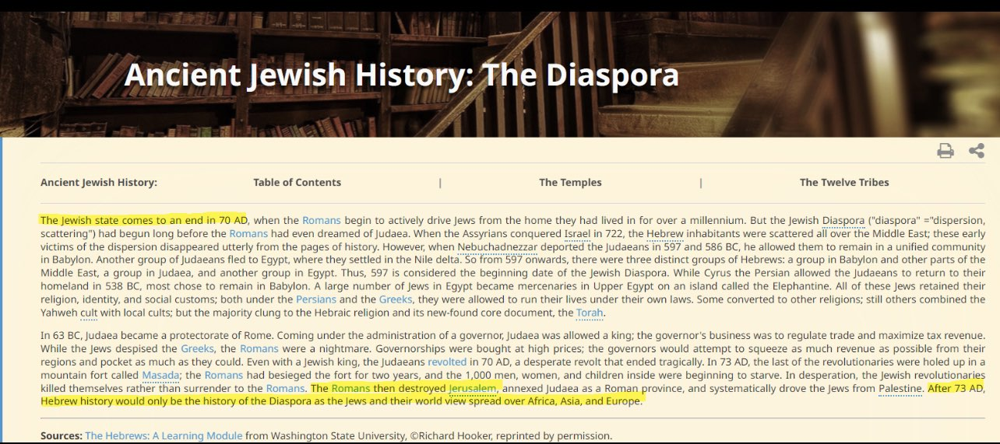
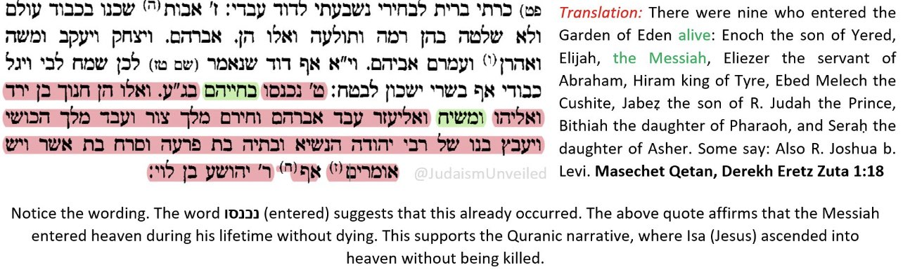

Proof Isa ibn Maryam peace be upon him is the Messiah
The 2nd Destruction of the Temple
Jeremiah 26:4-9

Leviticus 26:14-17

God warns of severe punishments upon the Children of Israel if they disobey and break covenant, desolation of city, diseases, and enemies ruling over them



What exactly happened 40 years prior to the destruction of the second temple and fall of the Jewish state when the children of Israel were punished?
Well the Children of Israel tried to kill Isa عليه سلام
That’s what happened 40 years prior.
“˹Remember˺ when Allah said, “O Jesus! I will take you and raise you up to Myself. I will deliver you from those who disbelieve, and elevate your followers above the disbelievers until the Day of Judgment. Then to Me you will ˹all˺ return, and I will settle all your disputes. As for those who disbelieve, I will subject them to a severe punishment in this life and the Hereafter, and they will have no helpers.”
(Quran 3:55-56)
“And We warned the Children of Israel in the Scripture, “You will certainly cause corruption in the land twice, and you will become extremely arrogant. When the first of the two warnings would come to pass, We would send against you some of Our servants of great might, who would ravage your homes. This would be a warning fulfilled. Then ˹after your repentance˺ We would give you the upper hand over them and aid you with wealth and offspring, causing you to outnumber them. If you act rightly, it is for your own good, but if you do wrong, it is to your own loss. “And when the second warning would come to pass, your enemies would ˹be left to˺ totally disgrace you and enter the Temple ˹of Jerusalem˺ as they entered it the first time, and utterly destroy whatever would fall into their hands. Perhaps your Lord will have mercy on you ˹if you repent˺, but if you return ˹to sin˺, We will return ˹to punishment˺. And We have made Hell a ˹permanent˺ confinement for the disbelievers.”
(Quran 17:4-8)
——
Psalm 20 Prophecy
“Now I know that the LORD saves his anointed; he will answer him from his holy heaven with the saving might of his right hand.”
(Psalm 20:6)
This is exactly what Muslims believe about Jesus peace be upon him. Allah saved him from being killed and crucified.
——
Psalm 91 Prophecy
https://m.youtube.com/watch?v=8aeOX8tLQKo
The Messiah is in Heaven According to the Talmud
Question: According to Judaism, can the Messiah be raised into heaven?
Answer: Yes!

https://m.youtube.com/playlist?list=PL_W2HLp2VYbjN5cgURLtEg6m8GfRRmtwJ